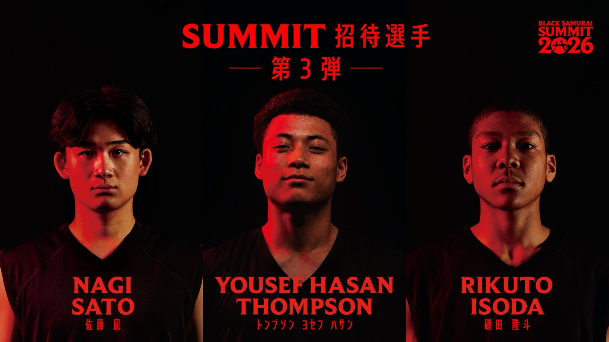

八村塁が選んだ、次の3人 —— 佐藤凪、トンプソン・ヨセフ・ハサン、磯田陸斗がSUMMITへ
八村塁が主宰する次世代育成プロジェクト「BLACK SAMURAI SUMMIT 2026」——2026年8月6日（木）から8日（土）まで、愛知県名古屋市のIG ARENAで開催——に、新たに3人の参加が決まった。佐藤凪、トンプソン・ヨセフ・ハサン、磯田陸斗。BLACK SAMURAI事務局が7月29日に発表した、参加選手の第3弾だ。

3つの、まったく違うキャリアの入口
佐藤凪（セント・トーマスモア・スクール）は京都・東山高校の出身。インターハイ優勝・準優勝、ウインターカップ準優勝を経験し、NIKE ALL ASIA CAMPではベスト5に選出。スラムダンク奨学生として渡米する道を選んだ。トンプソン・ヨセフ・ハサン（白鷗大学）は福岡第一高等学校の出身で、U18日本代表。ウインターカップ2025ベスト4を戦った。磯田陸斗（横浜ビー・コルセアーズ U18）は、FIBA U17ワールドカップに先発として出場し、世界14位を経験している。海外挑戦、大学、Bリーグのユース。3人3様のルートが、同じコートに集まる。
ゲームデイは8月8日
会期中には、田臥勇太と八村塁による対談トークショー（MCは佐々木クリス）や、¥ellow Bucksのスペシャルライブパフォーマンスも予定されている。招待選手は全16名の予定で、残る1枠は「BLACK SAMURAI KOBE CAMP MVP枠」として後日発表される。最後の1つの名前が誰になるのかまで含めて、この夏の楽しみだ。
出典: BLACK SAMURAI事務局（ディグポ有限会社）プレスリリース「八村塁主宰『BLACK SAMURAI SUMMIT 2026』次世代を担う注目の3名！佐藤凪選手、トンプソン・ヨセフ・ハサン選手、磯田陸斗選手の参加が決定！」（PR TIMES・2026年7月29日）
https://prtimes.jp/main/html/rd/p/000000015.000177045.html